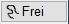

In den Programmen, in denen mit unterschiedlichen Einstellungen gearbeitet werden kann, zum Beispiel bei Linien oder Texten, werden die Parameter im rechten Menü (Funktionsbereich) in Optionspaletten angeboten.
Diese Einträge sind funktionsabhängig und werden innerhalb der jeweiligen Funktion erläutert.
Beispiel (Optionspalette "Linien")
|
Auswahl des Strichtyps. Strichtypnummer / Alternative Auswahlmöglichkeit des Strichtyps. |
|
Übernahme der Attribute eines Referenzelementes [so wie]. |
|
Stiftauswahl. Falls Stifte als Favoriten aktiviert wurden, werden diese an erster/oberster Stelle angezeigt. |
|
Ein- und Ausschalten des Differenzmodus. |
|
Auswahl des Bearbeitungsmodus: Bewege: Zeichenmarke bewegen Zeichn: Zeichnen |
 |
Zeichenmodus: mit Richtungslogik | ohne Richtungslogik | Freihand-Zeichnen |


Siehe auch:
·Stiftfarben und -breiten definieren